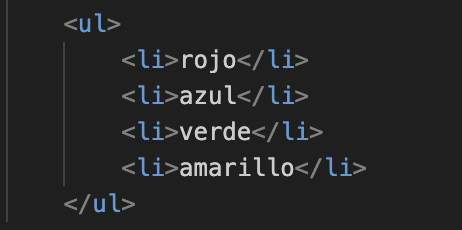

Las listas en HTML son una forma de organizar elementos de manera ordenada o desordenada.
para organizar de manera ordenada se utiliza <ol> y para una desordenada se utiliza <ul>
Así se ve una lista ordenada:
- rojo
- azul
- verde
- amarillo
- rojo
- azul
- verde
- amarillo
Estructura
Dentro de las listas desordenadas (<ul>) y ordenadas (<ol>), cada elemento de la lista se coloca dentro de una etiqueta <li> (que significa "list item" o "elemento de lista").
